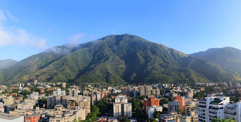

Caracas
Nacida y criada en la ciudad de Caracas, una de las ciudades con mayor diversidad gastronómica . La influencia viene de lo enseñado por las matriarcas de la familia en donde la mezcla de sabores resaltaban. Recetas como las hallacas,torta tres leches vienen de recetas familiares las cuales se consideran secreto de estado.